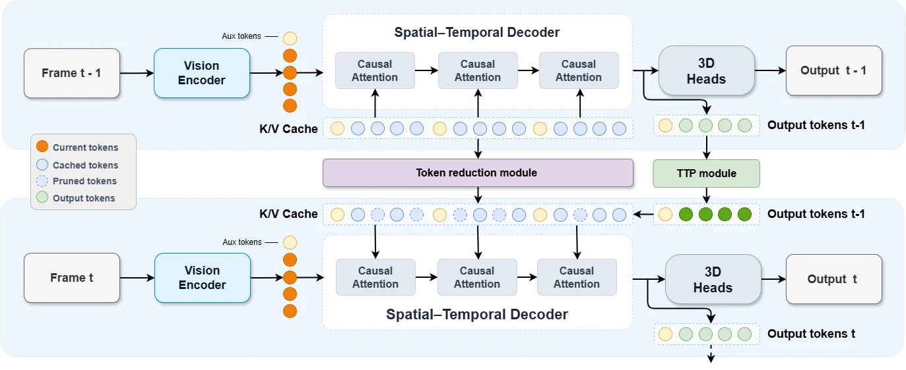
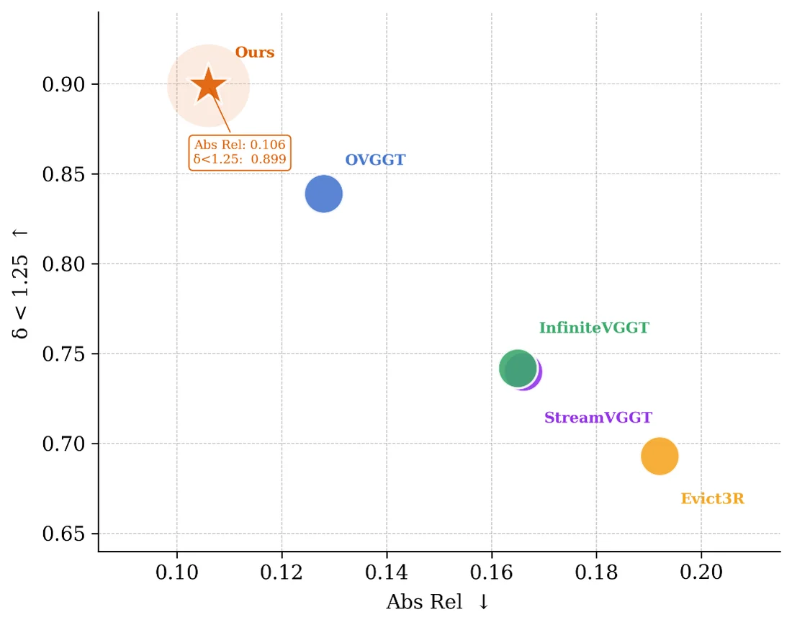
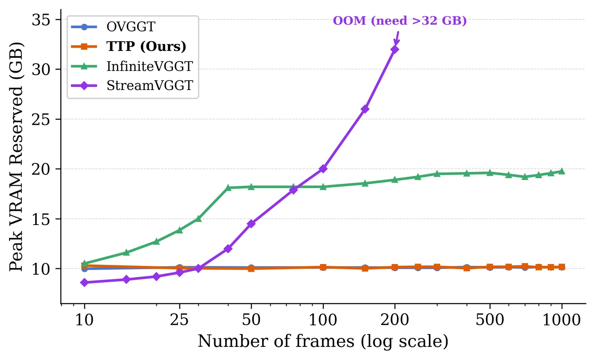
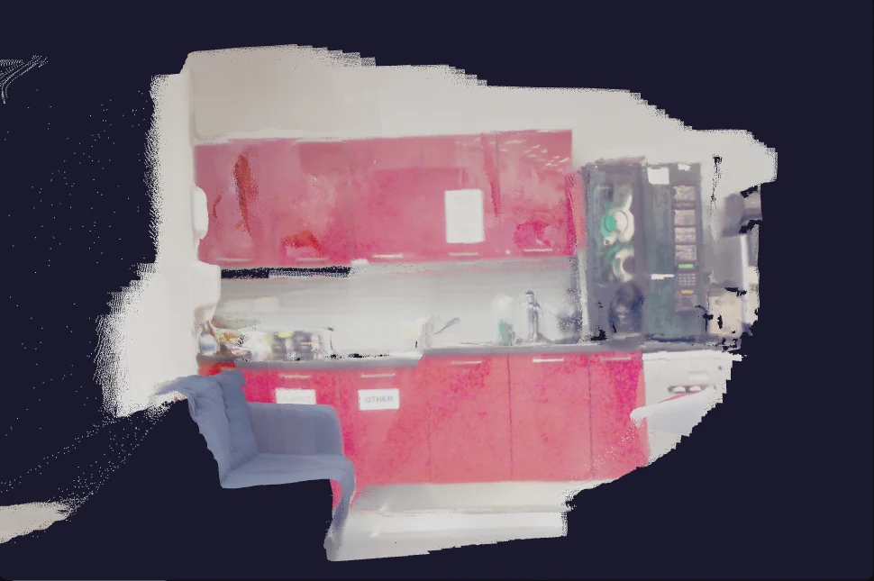
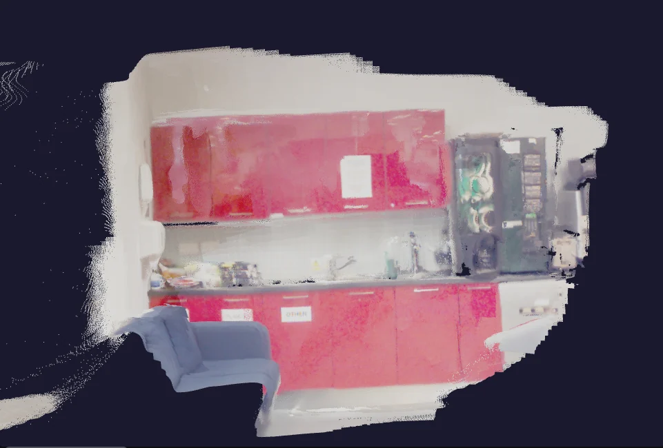
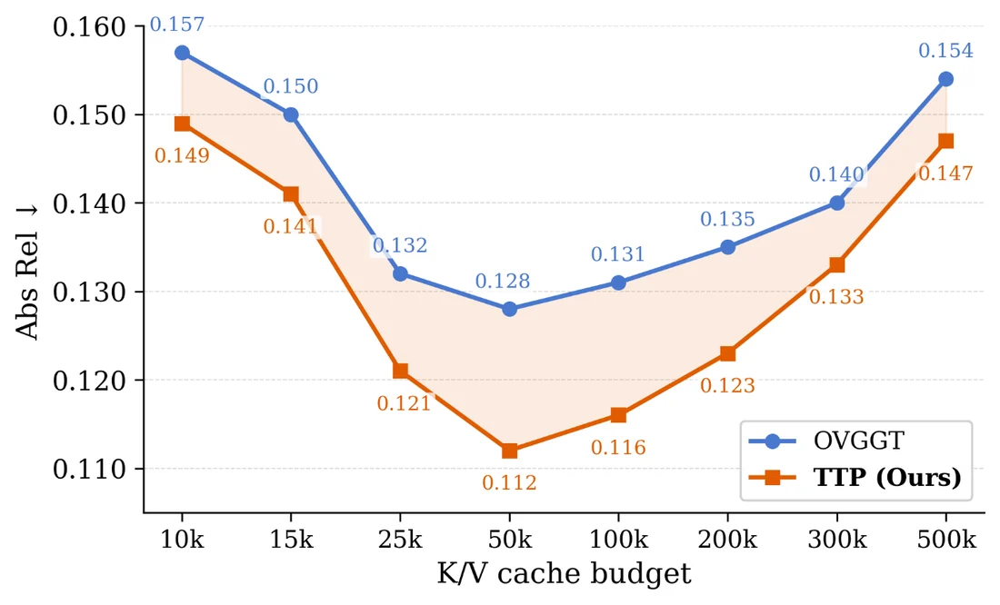
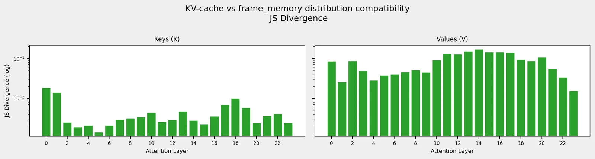

A training-free plug-in that lets streaming 3D reconstruction models remember what token pruning makes them forget, for just 0.1 GB of extra memory.
Modern 3D reconstruction transformers can rebuild a scene from a video, but on long videos their memory explodes.
The usual fix throws old tokens away, and the model forgets parts of the scene. I built a way to hand that memory back, without retraining anything.
Token pruning keeps memory bounded by evicting "redundant" tokens, which also deletes geometry. TTP adds a small sliding window of refined output tokens from recent frames: a compact summary of the scene so far, re-injected where the model can attend to it.

It is more accurate than every streaming baseline, and memory stays flat no matter how long the video runs.


The same kitchen, reconstructed from a 7-Scenes video by the baseline and with TTP added. Cabinets and appliances come out sharper and better aligned.



